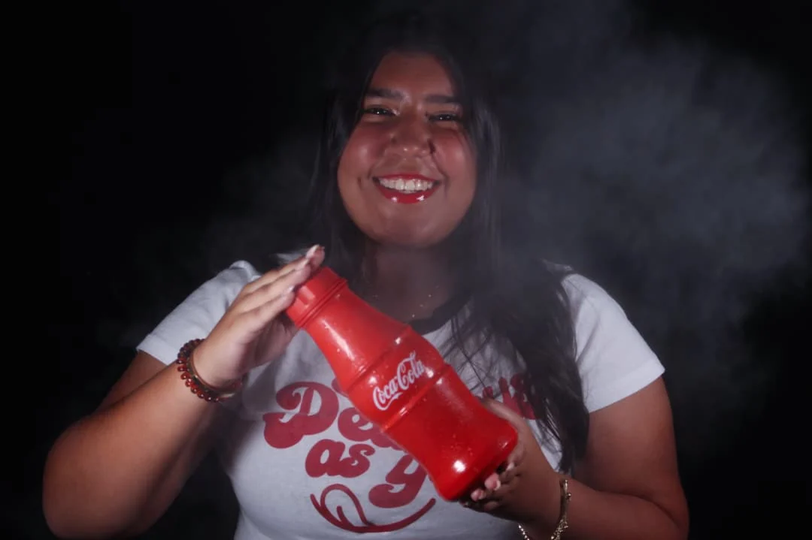
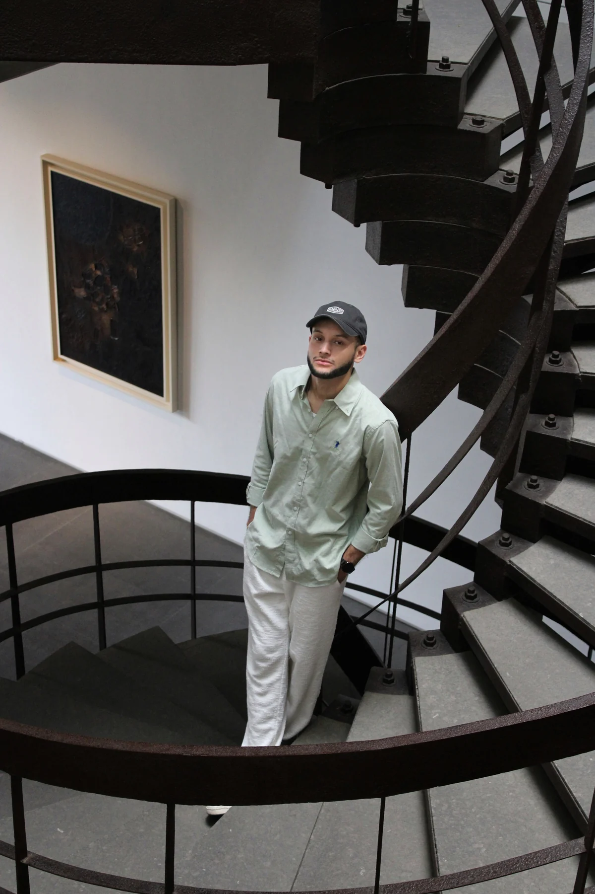

Direccion
Definimos intencion, referencias, vestuario, locacion y energia visual antes de disparar.

Retratos, maternidad, bodas, editorial y marcas con una mirada calida: imagenes que se sienten cercanas, cuidadas y listas para vivir mas alla del instante.

La experiencia
El portafolio esta pensado para mostrar rango sin perder identidad: retratos intimos, historias familiares, detalles de boda, producto y exploracion artistica. La prioridad es que cada imagen se vea grande, nitida y con contexto suficiente para que el visitante imagine su propia sesion.
Series
Las categorias ayudan a que clientes y marcas encuentren rapido el tipo de trabajo que buscan: personas, espera, ceremonia, producto, editorial o entorno.
Portafolio
Galeria con carga diferida, miniaturas WebP y lightbox para ver cada fotografia en formato amplio. Usa filtros o busca una palabra clave.
Proceso
Un flujo claro reduce nervios, mejora el resultado y hace que la sesion se sienta profesional desde el primer contacto.
Definimos intencion, referencias, vestuario, locacion y energia visual antes de disparar.
Trabajo con guia amable, pausas reales y cuidado por luz, detalle y expresion.
Seleccion curada, edicion coherente y archivos listos para compartir, imprimir o publicar.
Contacto
Si buscas retratos, una sesion familiar, cobertura de boda o contenido visual para marca, escribeme con tu idea, fecha tentativa y ciudad.